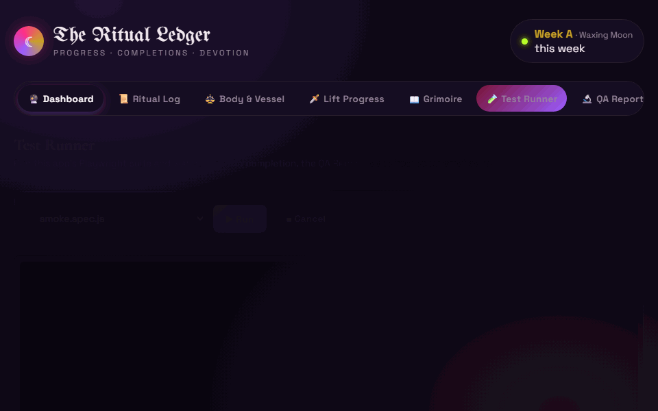

Quality Engineering
Senior QA Engineer
Probably currently breaking something
Quality isn't a phase at the end — it's the working, cast early and repeated until it holds. I build and automate test coverage across the whole system, from API to infrastructure, so teams can trust what they ship.
Three main disciplines built to scale with modern development practices
A shift-left advocate who treats quality as a foundation, not a gate — test strategy and process that scales with a team, automation engineering that actually gets maintained, and enough platform fluency to know what "works on my machine" is hiding.
Ritual Ledger — a real app, built to prove the practice

A personal workout tracker where the app is the system under test and the test engineering around it is the actual deliverable: Playwright suites utilizing Page Object Model practices, Allure reporting themed and self-hosted in-app, a live in-browser test runner, a full Kubernetes + Helm deployment validated against a real cluster, and pre-commit/pre-push secret-scanning git hooks — CI gates all of it on every PR.
View the repo →